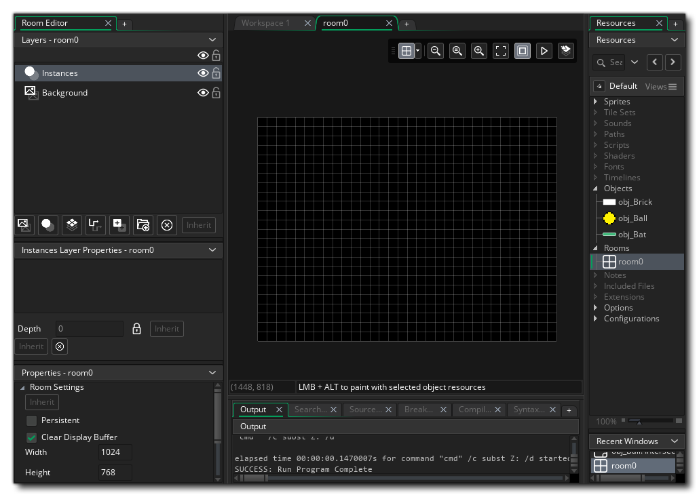
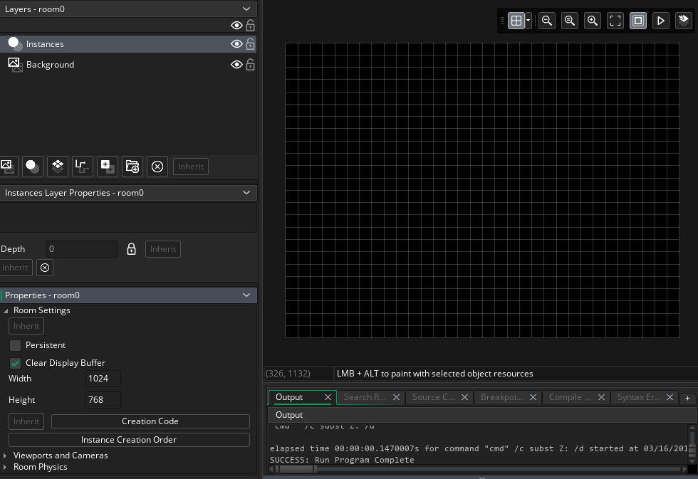
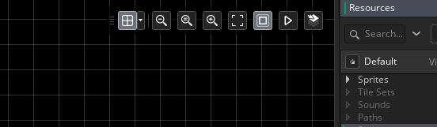
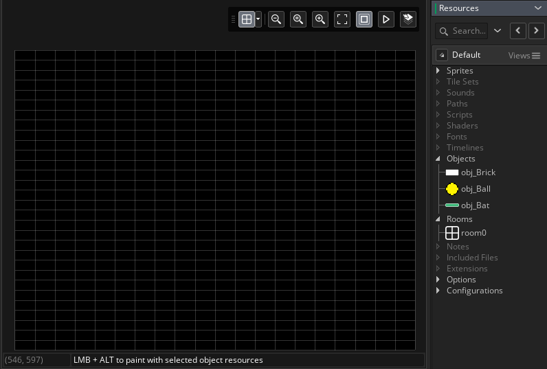
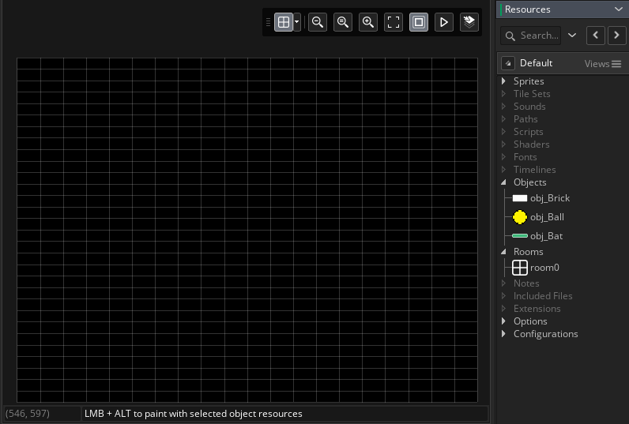
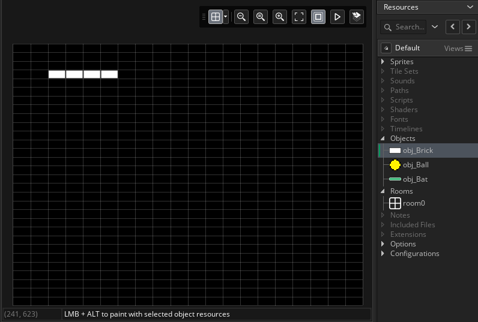
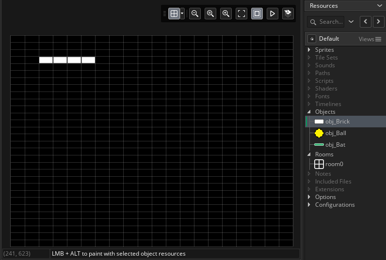

When making a game in GameMaker Studio 2, it requires at least one room to run, and so GameMaker always adds a room to your new projects. In this case it's called "room0" and can be found in the Resource Tree Rooms section. Like all other resources, you can add further rooms by using the right mouse button menu and selecting "Create Room", but for our game, we'll only need one so let's just edit that.
To start with, double click on the room in the resource tree to open the room editor: 
Everything that you place into the room is placed onto a layer, and you can see that there are two layers pre-created for you - one for "Instances" and one for the "Background". You don't need to add any other layers as these are fine for what we're making, so click on the "Instances" layer to select it ready for adding our game objects to.
To start with, lets make the room a little smaller. The default size is a playing area of 1024x768 pixels, but we want to set it to 640x480. This is done from the Room Properties tab: 
We now want to place some brick instances into the room. To make things easier, you should set the editor grid to be 32x16 rather than 32x32: 
To add a brick, simply click  the object "obj_Brick" and then drag it onto the room to the position you want:

the object "obj_Brick" and then drag it onto the room to the position you want:

It can be time consuming to constantly drag instances of objects from the Resource Tree, so instead you can simply select the brick object and then "paint" it into the room by holding down  and then clicking
and then clicking  and dragging where you want:

and dragging where you want:

Add about 6 layers of bricks, and then add a single instance of the ball object and then a single instance of the bat object. Your room should now look like this:

Time to test the game out!